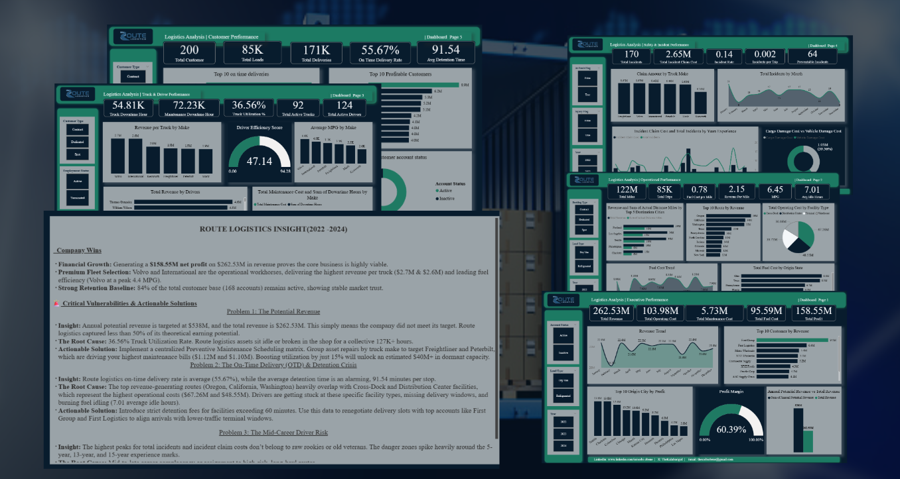
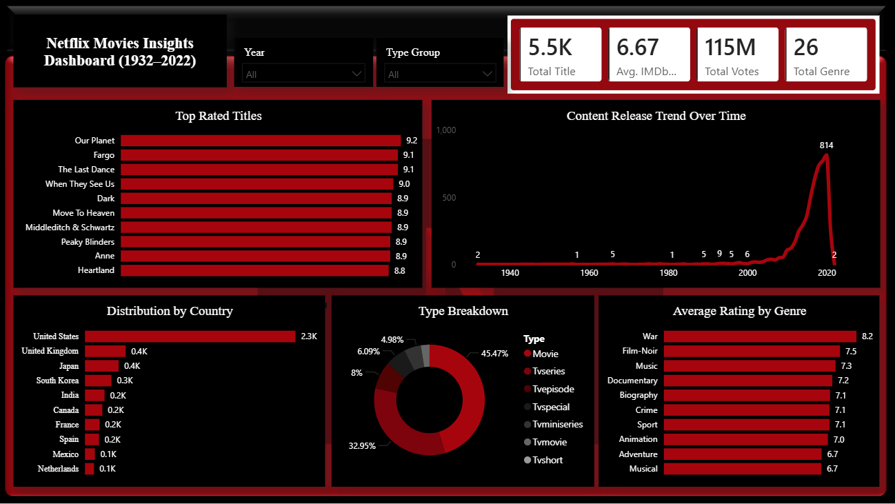
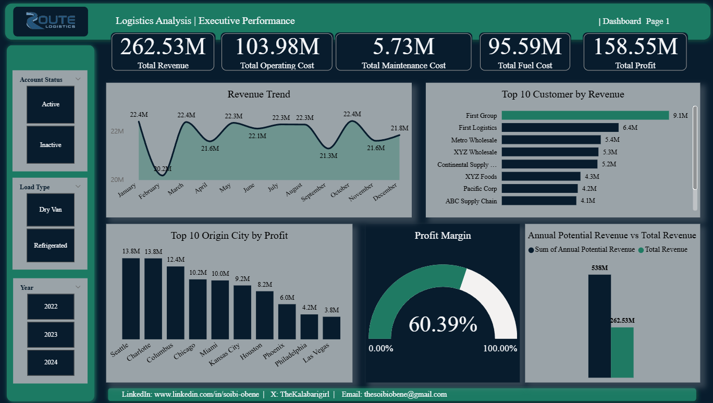

WELCOME TO MY DATA WORLD:WHERE RAW NUMBERS TELL COHESIVE STORIES
Step inside to explore interactive dashboards, data-driven strategies, and operational solutions designed to make an impact.

Hi, I'm Soibi Obene a Data Analyst skilled in Excel, Power BI, SQL, and Python, focused on transforming business data into strategic insights and interactive dashboards.
Step inside to explore interactive dashboards, data-driven strategies, and operational solutions designed to make an impact.


This comprehensive sales analytics project was executed from start to finish using only Microsoft Excel. It demonstrates a complete data workflow: cleaning raw transaction data, building robust data models, and designing a polished, user-friendly dashboard to monitor core KPIs.

I built this interactive dashboard from start to finish using Microsoft Power BI. First, I used Power Query to clean up messy data, fix errors, and get everything organized. Then, I turned that clean data into easy-to-read charts that help users quickly track important business numbers and make smart choices.

I built this dashboard to explore Netflix's library of movies and TV shows. First, I used Power Query to clean up the messy dataset, handle missing information, and sort the titles by genre and country. Then, I created interactive charts that let users easily see content release trends over time, top-rated shows, and what types of movies perform best.

I created this dashboard to track and analyze fleet performance. First, I used Power Query to clean up the messy data and organize it. Then, I built interactive charts that let users monitor high-level business metrics like profit margins and revenue trends so they can make smarter logistics decisions.